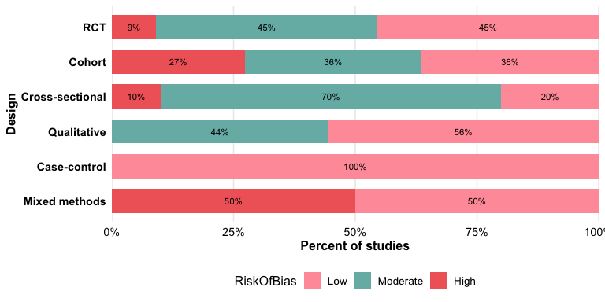
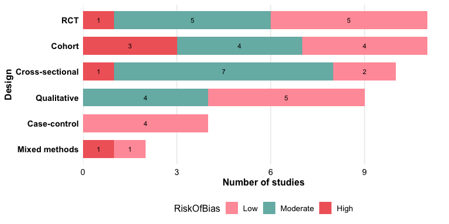
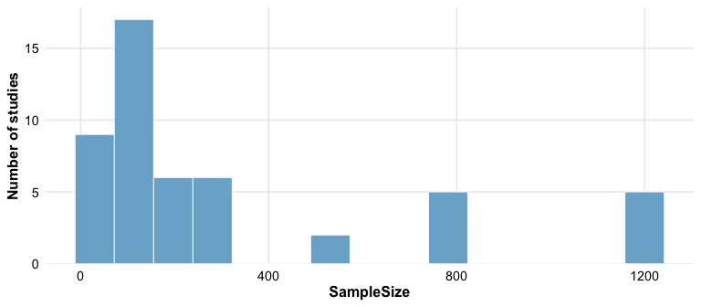
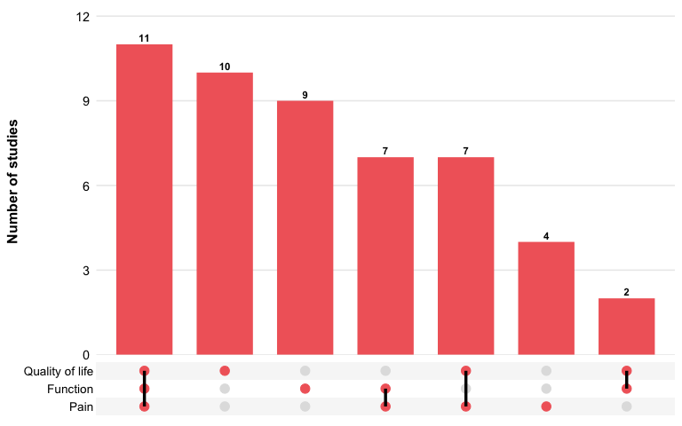
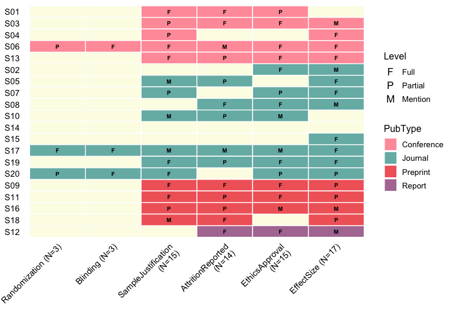
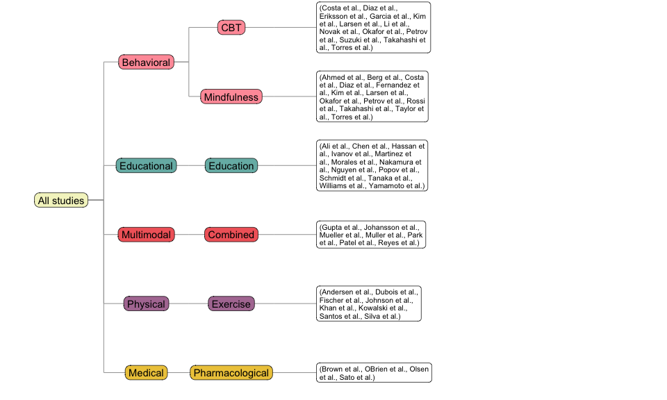

litReview provides functions to summarize and visualize categorical data from literature reviews. All plot functions return standard ggplot objects you can customize with +.
Installation
Install the released version from CRAN:
install.packages("litReview")Or the development version from GitHub:
# install.packages("remotes")
remotes::install_github("sonsoleslp/litReview")Usage


Stacked bar chart
reviewStackedBar() compares the composition of one category across another. By default each bar is scaled to 100% to compare proportions:
reviewStackedBar(studies, Design, RiskOfBias)
Use position = "stack" for raw counts:
reviewStackedBar(studies, Design, RiskOfBias, position = "stack")
Histogram
reviewHistogram() bins a numeric column; add fill_by to stack by a group.
reviewHistogram(studies, SampleSize, bins = 15)


UpSet plot
reviewUpset() shows how the values of a multi-value column co-occur across studies — a scalable alternative to the pairwise heatmap. Requires the ggupset package.
reviewUpset(studies, Outcome, fill = "#f16769")


Treemap
reviewTreemap(studies, Design)
reviewTreemap(studies, Intervention, color_by = InterventionType)
Coding matrix
reviewMatrix() shows a study-by-criteria evidence matrix: a tile wherever a study addresses a criterion, coloured by a study attribute with the coding level inside.
criteria <- c("Randomization", "Blinding", "SampleJustification",
"AttritionReported", "EthicsApproval", "EffectSize")
reviewMatrix(studies[1:20, ], criteria, color_by = "PubType",
levels = c(F = "Full", P = "Partial", M = "Mention"))
Tree diagram
reviewTree() draws a left-to-right hierarchy from columns given in order, listing the studies at each leaf.
reviewTree(studies, c("InterventionType", "Intervention"), study_id = Author)

Handling missing data
df_na <- data.frame(
StudyID = paste0("S", 1:8),
Design = c("RCT", "Cohort", NA, "RCT", "Case-control", NA, "RCT", "Cohort"),
stringsAsFactors = FALSE
)
reviewBar(df_na, Design, na.rm = FALSE, na_label = "Missing", na_last = TRUE)